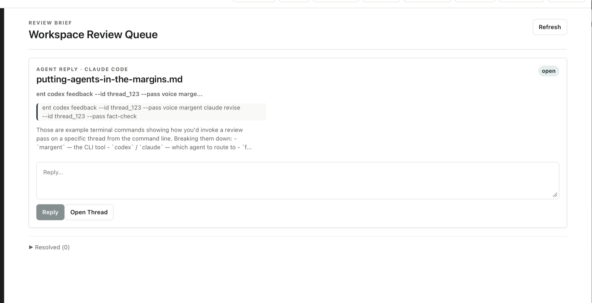

Write in ordinary Markdown.
Open a file or folder and draft normally. Margent saves the text as Markdown, not as a private database format.
Agent-native writing editor
Write in Markdown, leave comments in the margins, and ask Codex or Claude Code to explain, question, or revise a passage without moving your draft into a web app.
Local files. No Margent account. No collected documents, prompts, comments, API keys, OAuth tokens, or analytics.
Install once
Margent is meant to be installed by the same agent you will use for writing help. The agent sets up the repo, CLI, and small Margent instruction skill, then walks you through provider login when needed.
Install Margent for me. Margent is a local-first Markdown writing editor for working with Claude Code or Codex. It keeps my Markdown files local and stores comments and revision state in .mdreview sidecars. The repo includes the Margent CLI and a small agent skill so Claude Code and Codex know how to use the CLI. Read https://raw.githubusercontent.com/Brehove/margent/main/docs/agent-setup.md and follow it as the source of truth. If you cannot run local shell commands in this chat, stop and tell me to use Claude Code, Codex, or another agent mode with shell and file access. Do not ask me for API keys, OAuth tokens, or provider secrets. Margent does not collect credentials. Codex and Claude authentication must be initiated by me through their own CLI login flows. Set up Margent on this Mac: 1. Verify macOS, Git, Node 22 or newer, Rust stable, and npm are available. 2. Clone https://github.com/Brehove/margent into a normal projects folder, or inspect the existing clone if it is already present. Do not overwrite local changes. 3. Install dependencies, run the checks in the setup doc, install the margent CLI on PATH, and run margent install --agent-skills so Claude Code and Codex can use it. 4. Build the desktop app or run the development app according to the setup doc. 5. Check whether codex and claude are installed and authenticated. If not, walk me through codex login or claude auth login; I will complete browser/OAuth login myself. 6. Run margent doctor and summarize what works. 7. Ask me exactly one question: should Margent default to Codex, Claude Code, or ask each time? 8. Open a sample Markdown file in Margent and show me how to ask a question or request a revision from the comment pane.
How it works
Margent treats Markdown as the source of truth and adds a review layer beside it. That means your draft stays portable, while questions, agent replies, and proposed edits stay attached to the passages that caused them.
Open a file or folder and draft normally. Margent saves the text as Markdown, not as a private database format.
Highlight a sentence, leave a question, choose Codex or Claude, then press Ask or Revise. The answer comes back in the thread.
Claude Code or Codex can inspect the same Markdown workspace, reply to comments, and propose changes from outside the app.
Agent revisions become proposals. You inspect the change and accept or reject it. No agent silently rewrites the draft.
Send work out as HTML or DOCX, publish to Google Docs when your Google command-line tool is configured, or use print for PDF.
Review Brief gathers open questions, unanswered agent replies, and pending proposals so long projects do not sprawl out of sight.
Comment pane
The margin is the conversation. You can ask for an explanation, challenge a claim, request a fact-check, or ask for a cleaner revision. Margent keeps the reply attached to the highlighted passage.
Toggle between Codex and Claude Code for each thread. Use the provider that fits the job, without changing the document.
Ask adds a reply to the thread. Revise creates a proposal you can inspect, accept, or reject.

Three ways in
Use the comment pane to ask, revise, resolve threads, and approve proposals without leaving the editor.
Ask your agent in plain language while Margent keeps the review state visible. For example:
Use margent for setup, diagnostics, exports, and
repeatable review workflows when you want a terminal path.
Review Brief
Review Brief gathers unanswered agent replies, pending proposals, and stale comments into one queue. It helps you see what still needs your attention across a whole writing workspace.

Local by design
Margent has no hosted account system and no server-side document
storage. Your documents stay in your folders. Review data stays in
local .mdreview files beside them.
No uploaded drafts.
No collected comments.
No prompt analytics.
No stored API keys.
No OAuth tokens.
No repo-linked login.
Codex and Claude authentication is started by you through their own command-line tools. That login is between you and the provider. It is not connected to the Margent repository.
Manual path
The agent prompt is the front door, but everything is public and inspectable. Read the setup guide, browse the code, or install from source by hand.